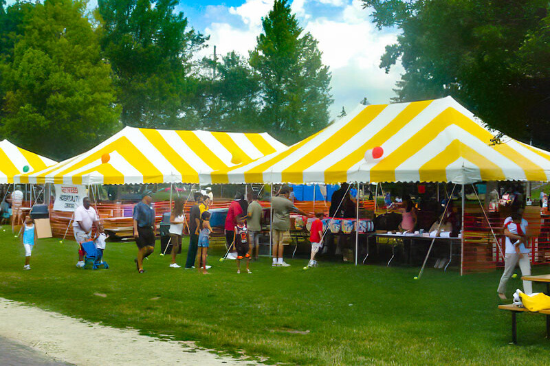

Fall Quad Festival
The Fall Quad Festival is Talbrook's largest welcome-back gathering: forty-plus student organizations tabling side by side, three food trucks, a battle-of-the-bands stage, and the annual lantern walk once the sun goes down. It's the easiest single afternoon to find a club, meet an org's officers, and figure out where you fit on campus this year.

What to expect
Doors — or rather, tents — open at 4:00 PM. Student organizations line both sides of the Central Quad path, each with a table, sign-up sheet, and usually a snack or giveaway. The main stage runs a rotating lineup of student bands and a cappella groups until the festival closes at 8:00 PM with a lantern walk down to the reflecting pool.
Attendee expectations
- Free and open to all current students, staff, and faculty with a Talbrook ID.
- Guests are welcome but must be signed in at the Lindale gate table.
- Food trucks accept card and Commons Dining Dollars; no cash-only vendors this year.
- Please leave space along the main path clear for festival staff and accessibility carts.
Schedule for the day
- Org tents and food trucks set up along the Quad path.
- Festival opens; club tabling begins.
- Battle-of-the-bands opening sets on the main stage.
- Battle-of-the-bands final round and audience vote.
- Lantern walk assembles at the stage; procession to the reflecting pool.
- Festival closes; tents come down.
Accessibility & participation
The Quad path is paved and step-free from every campus entrance. Accessible seating with a clear stage view is set up near the sound booth — look for the reserved-seating sign or ask any staff member in a green vest. ASL interpretation is provided for the battle-of-the-bands announcements and the closing remarks. Service animals are welcome throughout the festival grounds.